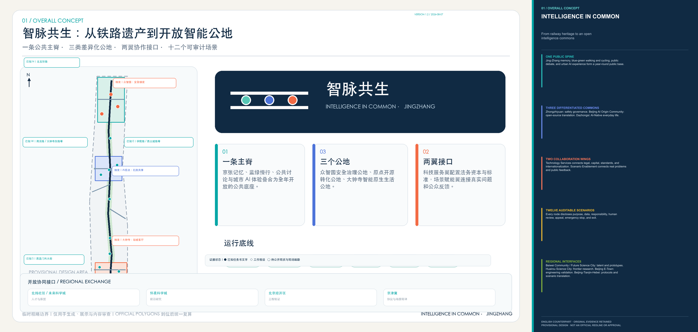
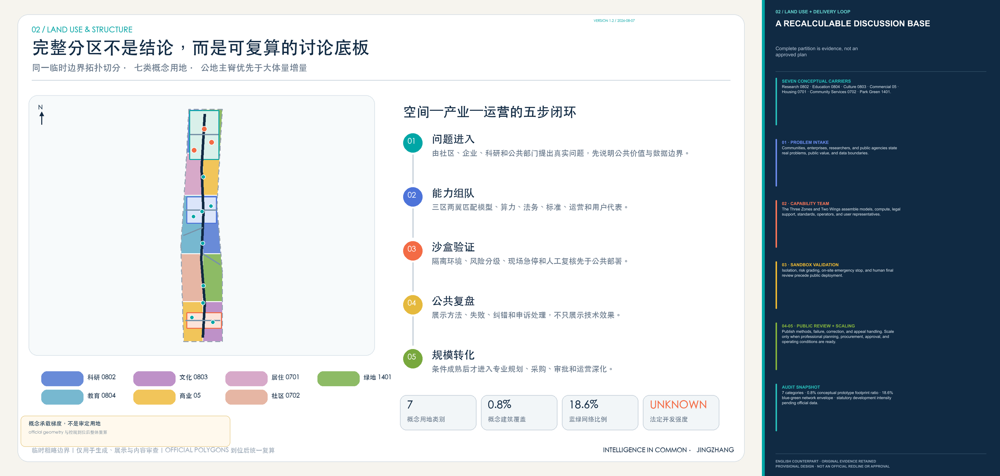
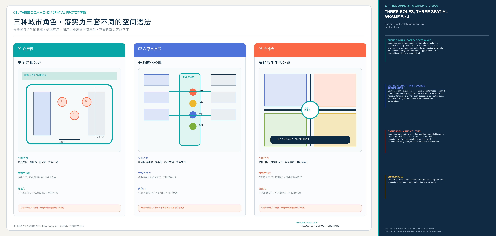
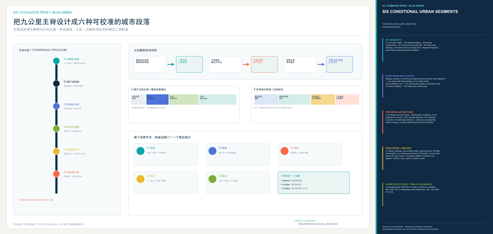
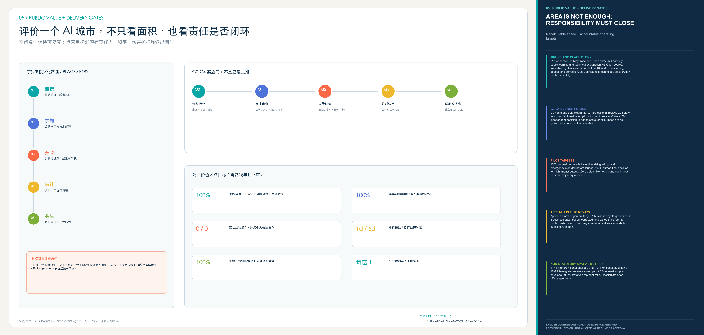

Zhongzhiyuan
- Separate public circulation from test logistics
- Safety-officer sightlines, emergency stop, interpretation gallery
- Exit when river, fire, or ownership conditions remain unclear
Not an AI showcase belt, but an urban public protocol that anyone can enter and every technology must answer to. The railway once shortened distances between cities; open intelligence can now shorten the distance between technology and the public.

The Coordinated Research Area organizes the innovation ecosystem; the Overall Design Area supplies a complete and recalculable urban-design base; the key areas test reversible projects. Every value follows geometry and metrics rather than being manufactured from graphics.

Zhongzhiyuan uses a public edge, interpretation gallery, test loop, and secure back-of-house to form a safety gradient. AI Origin stitches park pores, an Open Outputs Street, and shared ground floors. Dazhongsi uses a four-quadrant forecourt, all-weather street, and staffed service island as a station-city living room. These are non-surveyed spatial prototypes awaiting calibration.

The 9.4 km conceptual spine is deepened through six conditions: river-park safety, heritage reading, campus collaboration, community everyday life, cross-road stitching, and station forecourt living room. Section envelopes show relationships among walking and cycling, sponge planting, flexible commons space, and staffed service - never a road redline.

The twelve scenarios do not rely on personal tracking. S02-S04 are isolated industry tests. Public and high-impact decisions retain human final review, emergency stop, appeal, correction, and deletion.
The railway once shortened distances between cities; open intelligence can now shorten the distance between technology and the public. Five walkable chapters turn connection, learning, open source, audit, and coexistence into a distinctly Jing-Zhang public journey.
Site operators, universities, developers, resident and disabled-person representatives, data/legal/safety experts, and heritage professionals share scrutiny. Every scenario still has one named accountable operator.
A project cannot pass to the next gate if provenance, professional review, accountability, notice, human review, emergency stop, or appeal is missing.
Beiwei Community/Future Science City, Huairou Science City, Beijing E-Town, and Beijing-Tianjin-Hebei are conceptual collaboration interfaces. Real cooperation requires separate confirmation.
Structured data takes precedence over images, PDFs, and webpages. Spatial values demonstrate internal consistency. Operating targets require separate baselines, accountable parties, audit frequencies, and harm guardrails.

Announcement 1.3 / 1.4 / 1.5 and agent.1-agent.6 map to the proposal, GeoJSON, metrics, A3/A0, visual pages, sources, assumptions, and self-check. Naming and logo, six background cases, twelve scenarios, three tests, six personas, four landmarks, cultural narrative, and annual operation are readable in both languages.
Target: all four PASS
deterministic / spatial / visual / professional
Still awaiting official data:
redlines, key areas, regulatory controls, buildings, roads, heritage, utilities, and ownership.